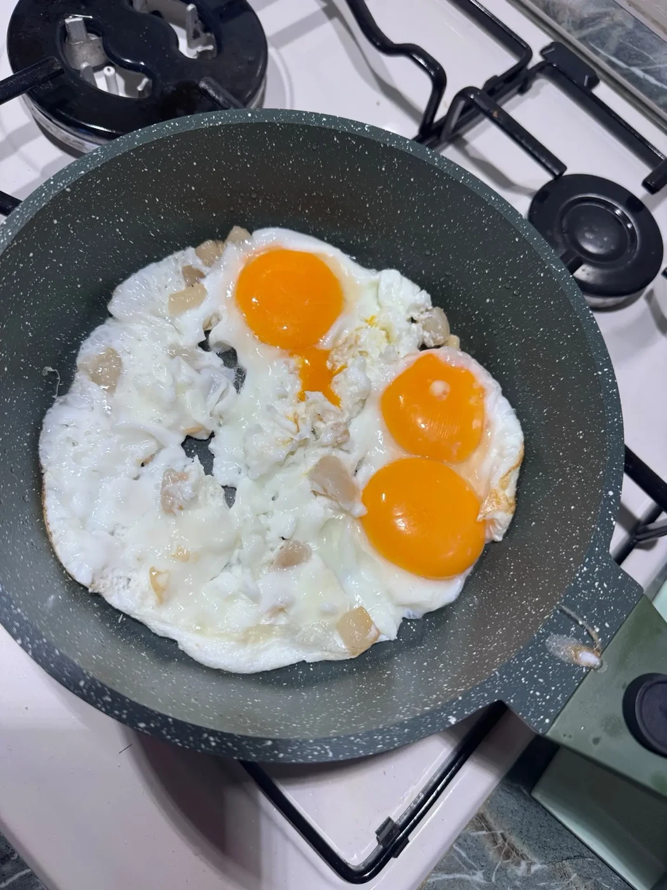
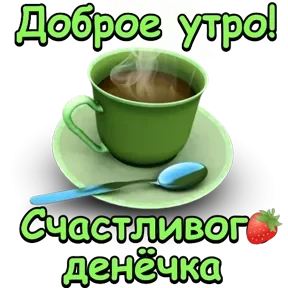
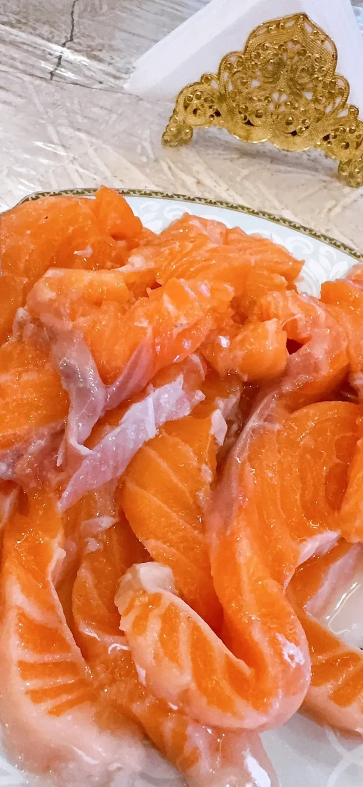
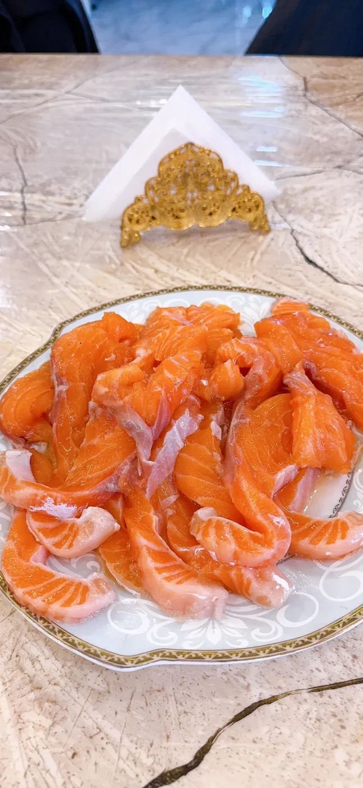
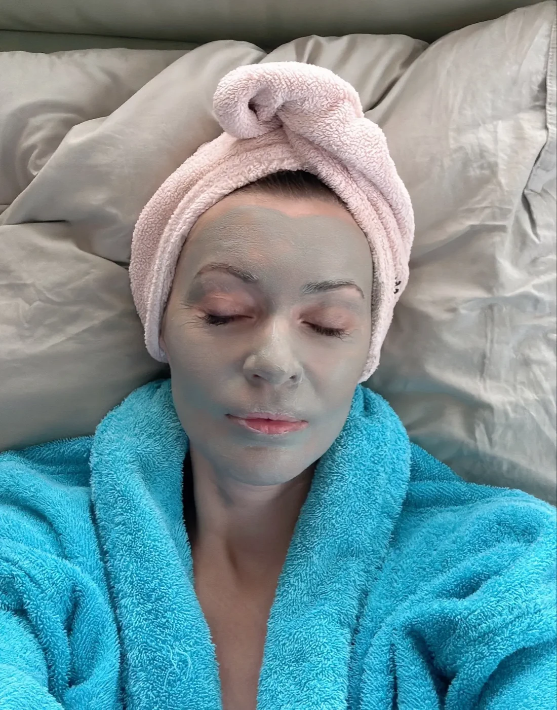
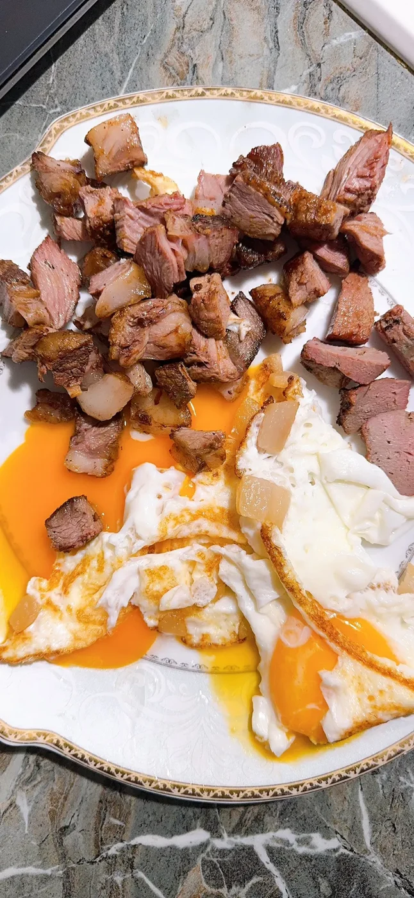
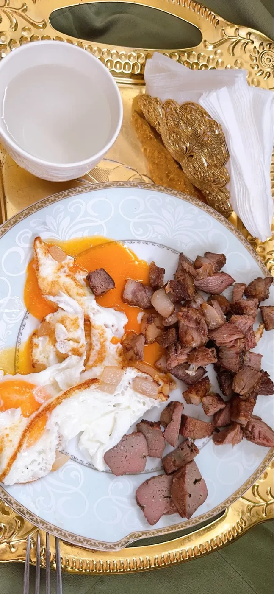
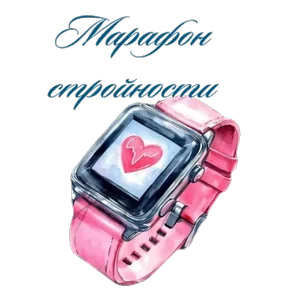

Личный дневник
Моменты, разговоры и короткие видео из моей жизни.
ИЗ ЖИЗНИ ХИЩНИЦЫ
Свежие записи.
Кусочек моего утра
Кусочек моего утра 😅.
Читать →Гимн карнивор-завтраку
Гимн карнивор-завтраку 🤣. https://music.yandex.ru/album/35353976/track/136022949?ref_id=C4E21704-F0D3-41E3-A02E-FB110CA37CCC&utm_medium=copy_link
Читать →
Мой завтрак
Читать →Продолжение утреннего разговора
С добрым утром — первый разговор
Вечернее настроение
Читать →
Доброе утро
Читать →
Семга и яйца
Читать →
Воскресный завтрак
Читать →
После баньки
Как же хорошо после баньки. Обожаю. Девочки, делитесь в комментариях своими любимыми масками для лица и волос. Что порекомендуете?
Читать →
Субботний завтрак
Читать →
Нас уже 777
Доброе утро, мои дорогие подписчики! ☀️ Нас уже 777 🫶🏼🫶🏼🫶🏼 Красивая цифра! Спасибо каждому, кто со мной. Мы растём, становимся сильнее и вместе ид
Читать →Ужин у мангала
Мангал на дровах. Ужин хищника 🔥 Дым, огонь, треск поленьев. Мясо на решётке, жир капает на угли и вспыхивает. Этот запах невозможно ни с чем перепут
Читать →